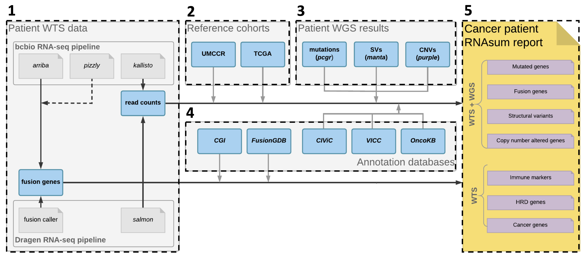

RNAsum is an R package that can post-process, summarise and visualise outputs from DRAGEN RNA or bcbio-nextgen RNA-seq pipelines. Its main application is to complement genome-based findings from the umccrise pipeline and to provide additional evidence for detected alterations.
DOCS: https://umccr.github.io/rnasum
remotes::install_github("umccr/RNAsum") # latest master commit
remotes::install_github("umccr/RNAsum@v0.0.X") # version 0.0.X
remotes::install_github("umccr/RNAsum@abcde") # commit abcde
remotes::install_github("umccr/RNAsum#123") # PR 123conda install r-rnasum==0.0.X -c umccr -c conda-forge -c biocondadocker pull ghcr.io/umccr/rnasum:latestThe pipeline consists of five main components illustrated and briefly described below. For more details, see workflow.md.

Collect patient WTS data from the DRAGEN RNA or bcbio-nextgen RNA-seq pipeline including per-gene read counts and gene fusions.
Add expression data from reference cohorts to get an idea about the expression levels of genes of interest in other cancer patient cohorts. The read counts are normalised, transformed and converted into a scale that allows to present the patient’s expression measurements in the context of the reference cohorts.
Supply genome-based findings from whole-genome sequencing (WGS) data to focus on genes of interest and to provide additional evidence for dysregulation of mutated genes, or genes located within detected structural variants (SVs) or copy-number (CN) altered regions. RNAsum is designed to be compatible with WGS patient outputs generated from umccrise.
Collate results with knowledge derived from in-house resources and public databases to provide additional sources of evidence for clinical significance of altered genes e.g. to flag variants with clinical significance or potential druggable targets.
The final product is an interactive HTML report with searchable tables and plots presenting expression levels of the genes of interest. The report consists of several sections described here.
The reference expression data are available for 33 cancer types and were derived from external (TCGA) and internal (UMCCR) resources.
In order to explore expression changes in the patient, we have built a high-quality pancreatic cancer reference cohort.
Depending on the tissue from which the patient’s sample was taken, one of 33 cancer datasets from TCGA can be used as a reference cohort for comparing expression changes in genes of interest of the patient. Additionally, 10 samples from each of the 33 TCGA datasets were combined to create the Pan-Cancer dataset, and for some cohorts extended sets are also available. All available datasets are listed in TCGA projects summary table. These datasets have been processed using methods described in the TCGA-data-harmonization repository. The dataset of interest can be specified by using one of the TCGA project IDs for the RNAsum --dataset argument (see Arguments).
The publicly available TCGA datasets are expected to demonstrate prominent batch effects when compared to the in-house WTS data due to differences in applied experimental procedures and analytical pipelines. Moreover, TCGA data may include samples from tissue material of lower quality and cellularity compared to samples processed using local protocols. To address these issues, we have built a high-quality internal reference cohort processed using the same pipelines as input data (see data pre-processing).
This internal reference set of 40 pancreatic cancer samples is based on WTS data generated at UMCCR and processed with the bcbio-nextgen RNA-seq pipeline to minimise potential batch effects between investigated samples and the reference cohort and to make sure the data are comparable. The internal reference cohort assembly is summarised in the Pancreatic-data-harmonization repository.
Note
The are two rationales for using the internal reference cohort:
RNAsum accepts WTS data processed by the DRAGEN RNA or bcbio-nextgen RNA-seq pipeline. Additionally, the WTS data can be integrated with WGS-based data processed using the umccrise pipeline. In the latter case, the genome-based findings from the corresponding patient sample are incorporated into the report and are used as a primary source for expression profile prioritisation.
The only required WTS input data are read counts provided in a quantification file from either the DRAGEN RNA or bcbio-nextgen RNA-seq pipeline.
The table below lists all input data accepted in RNAsum:
| Input file | Tool | Example | Required |
|---|---|---|---|
| Quantified transcript abundances | salmon (description) | TEST.quant.sf | Yes |
| Fusion gene list | DRAGEN RNA | TEST.fusion_candidates.final | No |
These files are expected to be organised in the following structure:
|
|____<SampleName>
|____<SampleName>quant.sf
|____<SampleName>.fusion_candidates.finalThe table below lists all input data accepted in RNAsum:
| Input file | Tool | Example | Required |
|---|---|---|---|
| Quantified transcript abundances | kallisto (description) | abundance.tsv, Transcripts Per Million | Yes |
| Fusion gene list | arriba, pizzly | fusions.tsv, test_sample_WTS-flat.tsv | No |
| Fusion gene plots | arriba plot | fusions.pdf | No |
These files are expected to be organised in the following structure:
|
|____<SampleName>
|____kallisto
| |____abundance.tsv
|____pizzly
| |____<SampleName>-flat.tsv
|____arriba
|____fusions.pdf
|____fusions.tsvNote
pizzly outputs two fusion gene files by default: - <sample_name>-flat.tsv lists all (unfiltered) the gene fusions - <sample_name>-flat-filtered.tsv lists filtered gene fusions
RNAsum makes use of gene fusions listed in the unfiltered file since it was noted that some genuine fusions (based on WGS data and curation efforts) get filtered out.
RNAsum is designed to be compatible with WGS outputs generated from umccrise.
The table below lists all input data accepted in RNAsum:
| Input file | Tool | Example | Required |
|---|---|---|---|
| SNVs/Indels | PCGR | pcgr.snvs_indels.tiers.tsv | No |
| CNVs | PURPLE | purple.cnv.gene.tsv | No |
| SVs | Manta | sv-prioritize-manta.tsv | No |
These files are expected to be organised in the following structure:
|
|____umccrised
|____<SampleName>
|____pcgr
| |____<SampleName>-somatic.pcgr.snvs_indels.tiers.tsv
|____purple
| |____<SampleName>.purple.gene.cnv
|____structural
|____<SampleName>-manta.tsvrnasum_cli=$(Rscript -e 'x = system.file("cli", package = "RNAsum"); cat(x, "\n")' | xargs)
export PATH="${rnasum_cli}:${PATH}"$ rnasum.R --version
rnasum.R x.x.x
$ rnasum.R --help
bash: line 8: rnasum.R: command not foundNote
Human reference genome GRCh38 (Ensembl based annotation version 86) is used for gene annotation by default. Alternatively, human reference genome GRCh37 (Ensembl based annotation version 75) is used when argument grch_version is set to 37.
At UMCCR we run RNAsum in production via AWS-batch. Before running, collate the following information:
Next, follow these steps:
aws lambda invoke command, based on the example below:aws lambda invoke \
--region ap-southeast-2 \
--function-name wts_report_trigger_lambda_prod \
--cli-binary-format raw-in-base64-out \
--payload '{"dataDirWGS":"Scott-SFRC/SBJ0000/WGS/2021-11-24/umccrised/SBJ0000__SB0000_something", "dataDirWTS":"Scott-SFRC/SBJ0000/WTS/2021-11-07/final/SBJ0000_something", "refDataset":"UCEC"}' \
/tmp/lambda.outputThe RNAsum HTML report for this sample will be created in the umccr-primary-data-prod S3 bucket, under Scott-SFRC/SBJ0000/WTS/2021-11-07/RNAsum. To use primary data from a different S3 bucket, use "dataBucket":"a-different-bucket" in the aws lambda invoke command. Also set resultBucket accordingly.
Below are RNAsum CLI commands for generating HTML reports under different data availability scenarios:
Note
/inst/rawdata/test_data folder of the GitHub repo.RNAsum runtime should be less than 20 minutes using 16GB RAM memory and 1 CPU.In this scenario, only WTS data will be used and only expression levels of key Cancer genes, Fusion genes, Immune markers and homologous recombination deficiency genes (HRD genes) will be reported. Moreover, gene fusions reported in the Fusion genes report section will not contain information about evidence from genome-based data. A subset of the TCGA pancreatic adenocarcinoma dataset is used as the reference cohort (--dataset TEST).
rnasum.R \
--sample_name test_sample_WTS \
--dataset TEST \
--dragen_rnaseq $(pwd)/../rawdata/test_data/dragen \
--report_dir $(pwd)/../rawdata/test_data/dragen/RNAsum \
--save_tables FALSEThe HTML report test_sample_WTS.RNAsum.html will be created in the ../rawdata/test_data/dragen/RNAsum folder.
rnasum.R \
--sample_name test_sample_WTS \
--dataset TEST \
--bcbio_rnaseq $(pwd)/../rawdata/test_data/final/test_sample_WTS \
--report_dir $(pwd)/../rawdata/test_data/final/test_sample_WTS/RNAsum \
--save_tables FALSEThe HTML report test_sample_WTS.RNAsum.html will be created in the ../rawdata/test_data/final/test_sample_WTS/RNAsum folder.
This is the most frequent and preferred case, in which the WGS-based findings will be used as a primary source for expression profile prioritisation. The genome-based results can be incorporated into the report by specifying the location of the corresponding umccrise output files (including results from PCGR, PURPLE, and Manta) using the --umccrise argument. The Mutated genes, Structural variants and CN altered genes report sections will contain information about expression levels of the mutated genes, genes located within detected SVs and CN altered regions, respectively. The results in the Fusion genes section will be ordered based on the evidence from genome-based data. A subset of the TCGA pancreatic adenocarcinoma dataset is used as reference cohort (--dataset TEST).
rnasum.R \
--sample_name test_sample_WTS \
--dataset TEST \
--dragen_rnaseq $(pwd)/../rawdata/test_data/dragen \
--report_dir $(pwd)/../rawdata/test_data/dragen/RNAsum \
--umccrise $(pwd)/../rawdata/test_data/umccrised/test_sample_WGS \
--save_tables FALSEThe HTML report test_sample_WTS.RNAsum.html will be created in the ../rawdata/test_data/dragen/RNAsum folder.
rnasum.R \
--sample_name test_sample_WTS \
--dataset TEST \
--bcbio_rnaseq $(pwd)/../rawdata/test_data/final/test_sample_WTS \
--report_dir $(pwd)/../rawdata/test_data/final/test_sample_WTS/RNAsum \
--umccrise $(pwd)/../rawdata/test_data/umccrised/test_sample_WGS \
--save_tables FALSEThe HTML report test_sample_WTS.RNAsum.html will be created in the ../rawdata/test_data/final/test_sample_WTS/RNAsum folder.
For samples derived from subjects, for which clinical information is available, a treatment regimen timeline can be added to the HTML report. This can be added by specifying the location of a relevant excel spreadsheet (see example test_clinical_data.xlsx) using the --clinical_info argument. In this spreadsheet, at least one of the following columns is expected: NEOADJUVANT REGIMEN, ADJUVANT REGIMEN, FIRST LINE REGIMEN, SECOND LINE REGIMEN or THIRD LINE REGIMEN, along with START and STOP dates of corresponding treatments. A subset of the TCGA pancreatic adenocarcinoma dataset is used as the reference cohort (--dataset TEST).
rnasum.R \
--sample_name test_sample_WTS \
--dataset TEST \
--dragen_rnaseq $(pwd)/../rawdata/test_data/dragen \
--report_dir $(pwd)/../rawdata/test_data/dragen/RNAsum \
--umccrise $(pwd)/../rawdata/test_data/umccrised/test_sample_WGS \
--save_tables FALSE \
--clinical_info $(pwd)/../rawdata/test_data/test_clinical_data.xlsx \
--save_tables FALSEThe HTML report test_sample_WTS.RNAsum.html will be created in the ../rawdata/test_data/stratus/test_sample_WTS_dragen_v3.9.3/RNAsum folder.
rnasum.R \
--sample_name test_sample_WTS \
--dataset TEST \
--bcbio_rnaseq $(pwd)/../rawdata/test_data/final/test_sample_WTS \
--report_dir $(pwd)/../rawdata/test_data/final/test_sample_WTS/RNAsum \
--umccrise $(pwd)/../rawdata/test_data/umccrised/test_sample_WGS \
--clinical_info $(pwd)/../rawdata/test_data/test_clinical_data.xlsx \
--save_tables FALSEThe HTML report test_sample_WTS.RNAsum.html will be created in the ../rawdata/test_data/final/test_sample_WTS/RNAsum folder.
The pipeline generates a HTML Patient Transcriptome Summary report and a results folder:
|
|____<output>
|____<SampleName>.<output>.html
|____results
|____exprTables
|____glanceExprPlots
|____...The generated HTML report includes searchable tables and interactive plots presenting expression levels of altered genes, as well as links to public resources describing the genes of interest. The report consists of several sections, including:
* if clinical information is available; see --clinical_info argument
** if genome-based results are available; see --umccrise argument
Detailed description of the report structure, including result prioritisation and visualisation is available here.